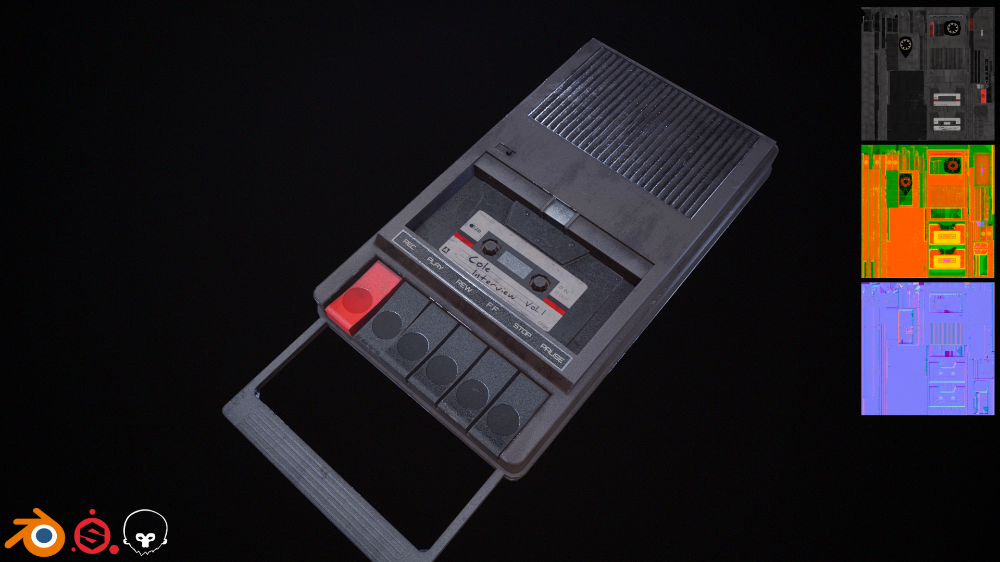
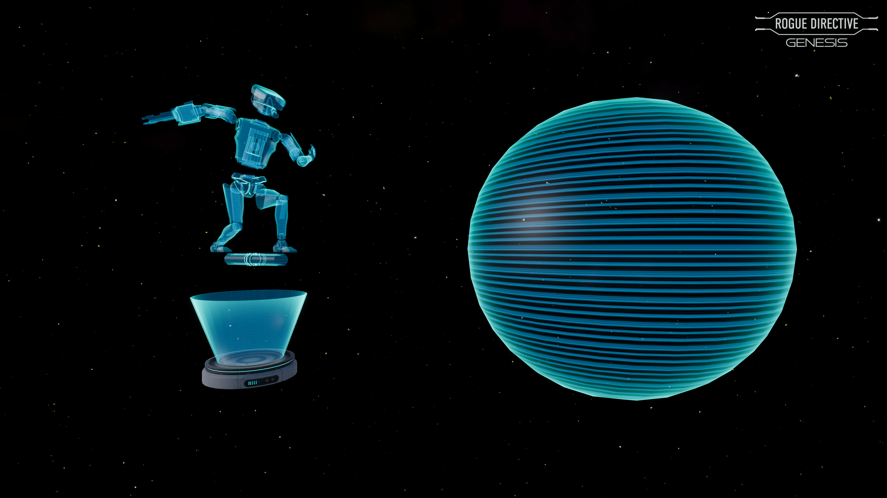

Professional AR Development
Reveal: The Past
Reveal: The Past is a mobile AR product focused on bringing heritage sites to life through interactive environments, characters and storytelling. As the sole artist on the project, the role covers environment art, set dressing, props, characters, animation, VFX, materials and interactive experience design within Unity 6.
Overview
Reveal: The Past is a mobile AR product focused on bringing heritage sites to life through interactive environments, characters and storytelling. As the sole artist on the project, the role covers environment art, set dressing, props, characters, animation, VFX, materials and interactive experience design within Unity 6. Development has included prototype experiences for Great Witcombe Roman Villa, Gloucester Cathedral, Brean Down Fort and Chedworth Roman Villa. These experiences are currently internal development prototypes and have not yet been deployed as commissioned site experiences.
Reveal: The Past | Trailer
Footage showcasing the AR application.
Site Experiences
A selection of heritage environments developed as internal prototypes for the Reveal: The Past platform.
Overview
Environment presentation and interactive experience design for Gloucester Cathedral. Work included environment composition, lighting studies and optimisation for mobile AR.
Main Cinematic


Overview
Development covering both the Victorian Palmerston Fort and WWII occupation. The site experience explores historical layering and visitor interpretation.
Main Cinematic


Technical Breakdown
The production pipeline behind the environments, assets and real-time AR experiences.

Environment Art & Set Dressing
Environments were constructed and dressed around the architecture, history and physical context of each location. Composition, asset placement and environmental detail were used to create believable and historically accurate spaces while supporting the intended visitor experience.
Asset Adaptation & Optimisation
Third-party asset packs including assets from Leartes Studio, Synty Studios and other various
Unity asset
packs, were regularly adapted for AR. Models,
materials, textures and shaders were reworked where necessary to meet mobile performance
requirements.
This also led me to having to follow the art style of Leartes Studio and
Synty Studios
within my own work to maintain a consistent visual
style, depending on the experiences needs.

Props
Materials were developed using Substance Painter and Unity Shader Graph, balancing surface detail and visual fidelity against the constraints of mobile AR hardware.
Shader Graph
Using Shader Graph, various shaders were created to support the visual style of the
environments and interactive elements, such as wind effects, dissolve effects and water
shaders. These shaders were optimised for mobile AR.
Most notably something that was particular difficult to implement was intergration
Reasullions custom character shaders and Bakery URP volume shader, to ensure that characters
recieves baked lighting data. Going through both assets documentation allowed me to get an
understanding of how to integrate them effectively and add additional features, to make them
more subtible to the projects needs.
VFX Graph
Visual effects were created to enhance the immersive experience of the AR environment,
ensuring they performed well under the constraints of mobile hardware.
The Reveal logo for example was created using Unity's VFX Graph, with a custom shader
applied to create a dissolve effect. The VFX was created by generating a SDF of the orginal
model and then using that data to drive the particles to create the silloutte of the logo.
Characters & Clothing
Historical characters were created using Character Creator 4 and animated with iClone 8 and Blender before being integrated into Unity. Character presentation needed to be as historically accurate as possible, while also fitting within the overall visual style of the project and performant in AR. I often had create bespoke animations for specific interactions. I also had to create custom clothing for the characters to ensure historical accuracy.
Character Lip-Syncing
Another one of my roles was to connect the characters vismes to a speech to text system, to allow the characters to speak in real-time. This was a particular challenge as I had to ensure that the characters lip-syncing was accurate and natural whilst having extremely limited documentation online. To do this I first had to figure out how to export character creator models ready to be lip sycned, I then had went through several text to speech solutions and tested them with the characters to find the best fit for the project. I also had to create a custom test script to control the characters lip-syncing, to ensure that it was accurate and natural, before sending it to the developers to integrate into the project and hook up to the AI system.
Additional Responsibilities
Supporting production skills that complemented the environment art for Reveal.
Interactive Experience Design
Experiences are designed around how visitors move through and interact with each heritage location. Environment layout, character encounters, interactive elements and environmental storytelling are combined to create experiences that guide discovery without relying entirely on traditional exposition.
Site Research & Development
Potential heritage locations have been researched and evaluated for their suitability for AR, considering historical significance, visitor experience, technical feasibility and sustainability. This work supported internal pitches exploring how Reveal could be applied to additional heritage locations, including opportunities with Cadw.